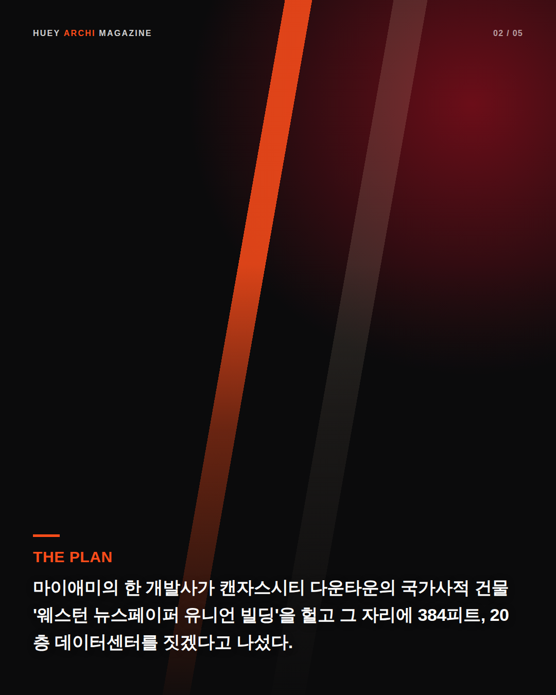
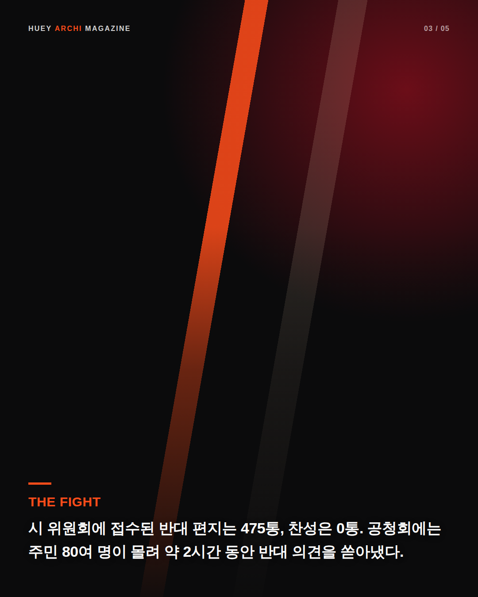
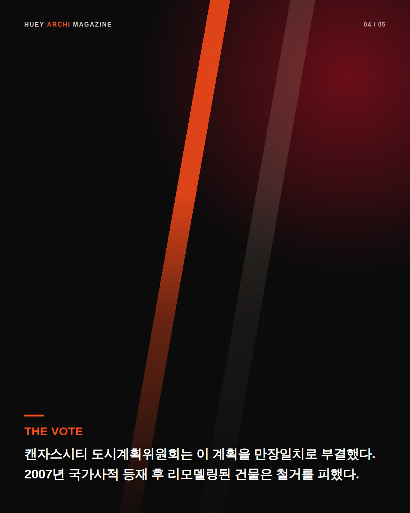
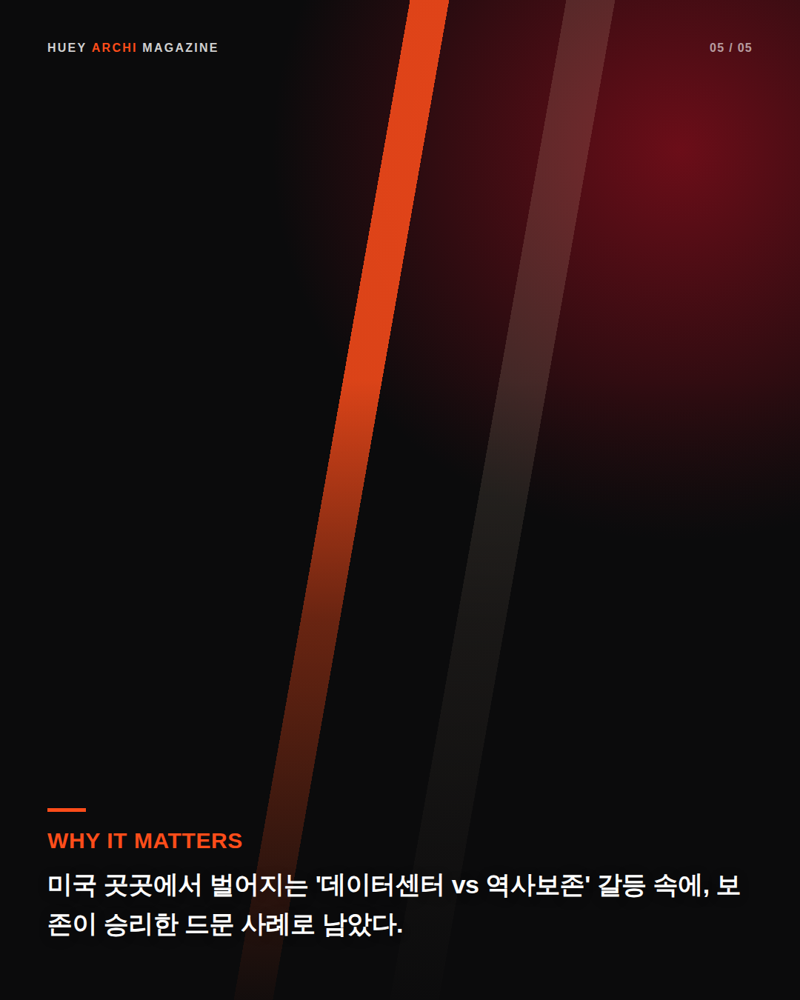

HEUY
.
ARCHI
최신호
지난호
HUEY ARCHI MAGAZINE
Editor HUEY
역사보존이 데이터센터를 이겼다




원문 출처
KCTV5
·
Kansas City Plan Commission blocks data center plan for historic Quality Hill site
|
KCUR
·
Kansas City officials denied a plan for downtown data center. Some residents vow to keep fighting
|
Hoodline
·
20-Story Data Center Proposed At 934 Central Threatens Historic KC Building
HUEY.ARCHI 기사
캔자스시티, 역사보존 건물 철거 막았다… 20층 데이터센터 계획 전원 부결 →